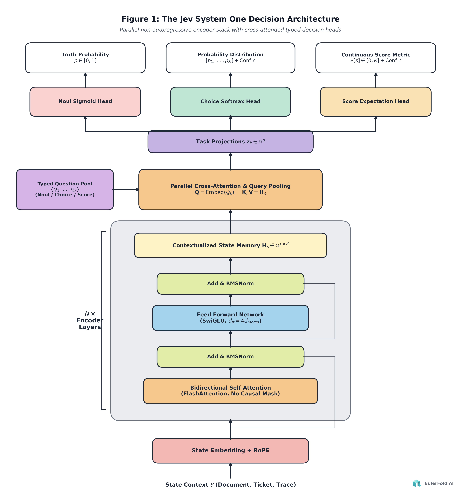

What is Jev?
The System One Model and Architecture Blueprint
Overview: Jev replaces autoregressive next-token decoding with parallel forward evaluation over a shared context state. Rather than generating JSON strings sequentially, learned classification heads compute calibrated probability distributions across typed primitives in a single pass.

When an autonomous agent needs to decide whether to run a database query, or a support system routes an incoming ticket, standard engineering practice today involves prompting a large autoregressive language model. The model receives a prompt, enters an autoregressive loop, generates tokens one by one, formats them into a JSON string, and sends that text across the network. The application then parses that JSON, validates the schema with a library like Pydantic, catches formatting errors, and extracts a single enum value or boolean flag.
This is an architectural mismatch.
A Large Language Model (LLM) is an autoregressive next-token generator. It evaluates conditional probability distributions over a vocabulary of fifty to one hundred thousand tokens, repeatedly feeding its own generated output back into its input sequence. Using that mechanism to determine whether a ticket is a bug report or a billing inquiry is like assembling a printing press to flip a light switch.
This is the problem that Jev — developed by Diogo Almeida and TypeSafe AI — addresses. Jev introduces a category of models built not for conversation or long-form prose, but for deterministic, calibrated decisions directly consumed by software runtime logic.
The terminology draws directly from psychologist Daniel Kahneman's foundational dual-process theory in Thinking, Fast and Slow. Kahneman divided human cognition into two complementary modes:
-
System 1: Fast, automatic, effortless, and reflexive. It operates in milliseconds without deliberate calculation—like ducking when an object flies toward your face, or reading words on a billboard.
-
System 2: Slow, deliberate, sequential, and computationally expensive. It allocates effortful mental focus—like calculating $17 \times 24$ in your head or composing a detailed legal brief.

In modern AI architectures, autoregressive models (like GPT-4, Claude, or reasoning models like o1) are System 2: they deliberate sequentially, generating token after token in an internal monologue. Jev is the missing System 1: an instant, non-generative, parallel reflex arc that evaluates state and renders calibrated judgment in tens of milliseconds.
To understand how Jev works, we need to examine where modern LLMs fail at decision routing, how Jev structures its typed primitives, how its parallel encoder architecture operates, and how Reinforcement Learning for Calibrated Decisions (RLCD) trains it to produce reliable probabilities.
The Problem with Using LLMs for Decisions
To understand why a dedicated decision architecture is necessary, let us build a clear mental picture of what actually happens inside a GPU when an LLM answers a simple question.
Suppose a customer writes: "I updated to version 4.2 and our daily data export crashed with error 502." You want to know one thing: Is this an infrastructure outage or a billing inquiry?
The Decoding Bottleneck
When an autoregressive model processes this prompt, it does not evaluate the question as a whole. It treats the problem as a sequence completion game: generating individual tokens—an opening brace {, a newline, the key "category", and finally the value "infrastructure"—before closing the brackets.
To output that single category, the GPU must sweep through every single weight matrix across all transformer layers for each token. Because modern GPU memory architectures are memory-bandwidth bound during generation, the hardware spends most of its clock cycles physically moving terabytes of model weights from off-chip device VRAM (HBM) into tiny on-chip SRAM cache lines just to multiply them against a single vector.
You are paying an enormous memory-bandwidth penalty for syntax tokens that carry zero semantic information.
This creates three fundamental points of friction for software systems:
-
Latency Inflation: Autoregressive generation takes 500 to 2,000 milliseconds regardless of how simple the decision is, because clock time is tethered to token count rather than decision difficulty.
-
The Formatting Fragility Trap: If the model hallucinates a trailing comma or drops a quotation mark, JSON parsing throws a syntax error. Your software application crashes unless wrapped in defensive regex retry wrappers.
-
The Calibration Deficit: Autoregressive models optimize for textual plausibility (what word sounds natural next?), not epistemic truth. When an LLM outputs
"confidence": 0.95, that 0.95 is simply a generated string of characters—it is not a mathematically calibrated probability.
A common developer assumption is: "Why not just use OpenAI Structured Outputs or Instructor?" Structured Outputs (response_format: { type: "json_schema" }) constrain an autoregressive LLM to sample tokens conforming to a context-free grammar. While this guarantees syntactically valid JSON, it does not alter the underlying physics: the model still generates character by character, memory latency remains identical, and probabilities remain uncalibrated.
Jev removes text generation entirely. It has no vocabulary decoder head. It cannot write stories, draft emails, or converse. Instead, it accepts a block of text state, evaluates typed questions directly against that state, and outputs calibrated numbers in a single forward pass.
The Three Typed Primitives
In standard software engineering, functions return concrete types: a boolean, an enum, or a floating-point number. But when developers build with LLMs, they are forced to discard types, convert everything into conversational English, and parse strings back into types.
Jev eliminates this conversion layer. It models decisions using three mathematically bounded primitives: noul, choice, and score.
| Primitive | Mathematical Formulation | Output Contract | Semantic Meaning | Systems Use Case |
|---|---|---|---|---|
noul |
$p = \sigma(W_{\text{noul}} z + b) \in [0, 1]$ | Scalar float $p$ + confidence $c$ | Epistemic truth of a proposition | Tool execution gating, security guardrails, boolean assertions |
choice |
$\mathbf{p} = \text{softmax}(W_{\text{choice}} z) \in \Delta^M$ | Selected key + full simplex $\mathbf{p} + c$ | Distribution over $M$ mutually exclusive options | Request triage, model routing, workflow dispatch |
score |
$\mathbb{E}[S] = \sum_{k=0}^K k \cdot p_k \in [0, K]$ | Continuous float $\hat{s}$ + anchor probs $+ c$ | Calibrated expected value across an ordered scale | Priority queues, risk evaluation, urgency indexing |
noul, choice, score).1. Noul: True/False Verification
The term noul draws inspiration from classical philosophical nomenclature for an irreducible concept or truth atom.
Think of a noul as a semantic multimeter. You touch two test leads to a circuit board to measure whether voltage exists. Similarly, a noul attaches an assertive proposition to a block of text and measures its truth value on a continuous dial from $0.0$ to $1.0$:
-
$p > 0.90$ (Decisive Verification): Unambiguously confirmed by the state.
-
$p = 0.50$ (Epistemic Indifference): The state provides zero evidence for or against.
-
$p < 0.10$ (Decisive Falsification): Directly contradicted by the state.
Notice what happens at $p = 0.50$. In a traditional LLM asked for a boolean assertion (true or false), the model is forced to pick one word, flipping an arbitrary coin if it is uncertain. A noul makes epistemic uncertainty visible: if the context contains zero evidence for the proposition, it outputs $p = 0.50$ with an overall confidence near zero.
Here, developers often ask: Is confidence the same as probability? They are mathematically distinct in Jev:
-
Probability ($p$): The model's estimate of event likelihood given the provided state (e.g., "There is an 89% probability this customer demands a refund").
-
Confidence ($c$): How much evidence the state contained to support making a decision at all. If the state is empty or uninformative, Jev outputs probabilities near uniform random distribution with confidence approaching $0.0$.
In runtime code, developers do not parse strings; they write standard numerical assertions directly on calibrated output values: if the truth probability $p \ge 0.85$ and confidence $c \ge 0.70$, the system executes the tool; if confidence drops below $0.30$, it routes the request to a supervisor.
2. Choice: Picking Categories
The choice primitive represents categorical selection across $M$ discrete options.
In standard LLM completions, if you ask a model to choose between data_pipeline and infra_ops, the model outputs a single text string: "data_pipeline". But what if the model's internal probability was $51\%$ for data and $49\%$ for infra? The application has no way of knowing it was an almost even split—it blindly executes the single option.
A choice primitive returns the complete probability simplex alongside an epistemic confidence metric. For instance, evaluating an incoming operational ticket yields:
-
Selected Choice:
data_pipeline -
Epistemic Confidence ($c$): $0.91$
-
Simplex Distribution ($\mathbf{p}$):
data_pipeline: $0.84$infra_ops: $0.12$auth_security: $0.03$frontend_ui: $0.01$
Having access to the complete distribution allows runtime logic to handle edge cases with mathematical precision:
-
Decisive Case ($p_{\text{data}} = 0.94, p_{\text{infra}} = 0.04$): The margin of separation is wide ($\Delta p = 0.90$). The incident routes directly to the data on-call engineer.
-
Tangled Case ($p_{\text{data}} = 0.47, p_{\text{infra}} = 0.45$): The margin of separation is tiny ($\Delta p = 0.02$). The incident touches both infrastructure and data ingestion, so the system automatically cross-tags both engineering teams simultaneously.
3. Score: Continuous Ratings
Many engineering decisions are not binary toggles or distinct categories; they exist along an ordered spectrum:
-
Incident priority (P0, P1, P2, P3, P4)
-
Customer churn risk
-
Code review risk evaluation
-
Security vulnerability severity (CVSS 0.0 to 10.0)
When prompt engineers ask an LLM to rate severity from 0 to 4, the model typically outputs a single discrete integer token: 3.
This introduces quantization error. What if a production defect is more severe than a routine level 3, but not quite a total level 4 outage? An integer cannot express this nuance.
The score primitive solves this problem by taking an ordered discrete rubric $\{0, 1, \dots, K\}$ and calculating a probability-weighted continuous expected value:
$$ \hat{s} = \sum_{k=0}^K k \cdot p_k, \quad \text{where } \sum_{k=0}^K p_k = 1.0 $$
For an incident with anchor probabilities $[0.01, 0.02, 0.07, 0.35, 0.55]$, Jev outputs a continuous expected value score of 3.42.
Because this is a continuous floating-point number, an incident triage queue can sort issues with exact mathematical precision:
-
An outage with $\hat{s} = 3.85$ automatically sorts ahead of an incident with $\hat{s} = 3.10$, even though both would be coarsely labeled "level 3" by an LLM.
-
The anchor probabilities reveal the shape of the uncertainty: $90\%$ of the probability mass ($0.35 + 0.55$) is concentrated in levels 3 and 4, proving the incident is severe without ambiguity.
Jev Architecture
To understand how Jev executes these evaluations without generating tokens, look closely at Figure 1 and the video walkthrough above.
In an autoregressive decoder, every token is blind to the future. Token 3 cannot look at Token 10 because a causal mask zeroes out future connections. That restriction is essential for generating text, but it is a handicap for understanding context.
Jev discards causal masking. It is built as a bidirectional transformer encoder. Every token in the input state can attend to every other token from the very first layer.
A Single Forward Pass
-
State Ingestion: The input state (such as a customer message, database log, or code diff) is tokenized and embedded with Rotary Position Embeddings (RoPE).
-
Global Contextualization: The token sequence passes through $N$ encoder layers using FlashAttention. In a single dense matrix multiplication, every token exchanges information with every other token across the entire context window.
-
Parallel Query Injection: Each typed question defined in the request is converted into a task-specific query token vector $Q_k \in \mathbb{R}^{d_{\text{model}}}$.
-
Cross-Attention Pooling: The question vectors attend to the globally contextualized memory of the state. This gathers all relevant evidence across the document into a single compact latent vector $z_k$ for each question.
-
Specialized Output Projections: Each $z_k$ vector is fed directly into its corresponding typed head:
- Noul Head: $p = \sigma(W_{\text{noul}} z_k + b)$
- Choice Head: $\mathbf{p} = \text{softmax}(W_{\text{choice}} z_k)$
- Score Head: $\hat{s} = \sum_{j=0}^K j \cdot [\text{softmax}(W_{\text{score}} z_k)]_j$
Notice the critical structural difference: Step 2 (the expensive transformer pass) is computed only once.
Whether you ask one question or ten questions, the encoder processes the context state once. Evaluating ten questions simply means projecting ten lightweight cross-attention heads against the same shared memory in parallel.
Generative LLMs vs. Decision Encoders
To see the operational contrast clearly, let us compare their execution mechanics side by side:
| Architectural Property | Standard Generative LLM | Jev Decision Engine |
|---|---|---|
| Primary Task | Autoregressive sequence generation | Parallel probabilistic evaluation |
| Attention Mask | Causal (lower-triangular, tokens only see the past) | Bidirectional (full visibility across entire state) |
| Inference Passes | $T$ sequential forward passes (one per token generated) | $1$ single forward pass for all questions |
| Hardware Bottleneck | Memory-bandwidth bound (reading weights from HBM repeatedly) | Compute-bound dense matrix multiplication |
| Output Type | Token strings (unstructured text requiring JSON parsing) | Typed scalars, probability vectors, and confidence values |
| Latency Profile | $600\text{ ms} - 3000\text{ ms}$ | $70\text{ ms} - 500\text{ ms}$ |
| Failure Modes | Broken JSON, schema hallucinations, missing brackets | Classification error (strictly bounded within schema) |
How Jev is Trained: RLCD
Building a fast encoder is only half the battle. If the model's output probabilities are uncalibrated, software logic cannot trust them.
In standard LLMs, models are aligned using Reinforcement Learning from Human Feedback (RLHF). Human evaluators (or AI judges) review two answers and pick the one they prefer.
RLHF is effective for making conversational agents polite, organized, and articulate. But RLHF is actively harmful for probabilistic decision-making.
Why? Because RLHF introduces an overconfidence bias. If a human asks an LLM a difficult question and the model responds with total confidence ("The capital of Australia is Canberra with 100% certainty"), human raters reward it. If the model honestly says "I am 52% sure it is Canberra and 48% sure it is Sydney", human raters tend to penalize it as hesitant or unhelpful. Over hundreds of thousands of RLHF iterations, models learn to sound confident even when they are guessing.
To prevent this, TypeSafe trained Jev using RLCD (Reinforcement Learning for Calibrated Decisions).

Ground Truth Without Human Raters
A fundamental question in training a decision model is: Where does the ground-truth target $y^*$ come from if we eliminate human raters?
In standard language model training (such as RLHF or DPO), human evaluators provide subjective ratings on prose. Because two humans frequently disagree on which essay or code explanation is "better", human ratings are inherently noisy, expensive to collect, and subject to rater fatigue.
Decision models do not predict stylistic prose; they predict discrete system outcomes, tool-call validity, routing correctness, and classification states. Because of this structural constraint, Jev's training pipeline replaces human raters with deterministic verification oracles across four primary data streams:
-
Compiler, Runtime, and Test Execution Oracles: When evaluating tool selection and code dispatch, ground truth is established by deterministic execution. If Jev evaluates whether an API payload or SQL query will fulfill a data extraction request, the system runs the query inside an isolated sandbox. If the query executes cleanly, passes schema validation, and satisfies assertion tests, $y^* = 1.0$. If it raises an unhandled exception, syntax error, or returns a null set when data was present, $y^* = 0.0$. The feedback loop is binary, automated, and impossible for the model to game with persuasive language.
-
Historical System and Incident Audit Logs: Production software environments generate massive volumes of verified historical outcomes: resolved customer incident escalations, fraud dispute determinations, transaction clearance records, and security alert triages. These records contain the exact text context known at the moment of decision, paired with the final, audited operational outcome. By training on these immutable event ledgers, the model learns to evaluate operational states against real-world consequences rather than subjective human opinion.
-
Formal Verification and Synthetic Constraint Rubrics: For logical routing, permission checks, and structured schema conformity, training datasets are synthesized using formal verification tools, SAT/SMT solvers, and property-based test generators. Because the problems are generated from mathematical proofs and explicit state transition tables, the true answer $y^*$ is mathematically provable. Training on synthetic formal tasks allows the pipeline to scale to millions of diverse decision paths without human intervention.
-
Curated Ambiguity and Information-Deficient Edge Cases: To train the model to output accurate epistemic uncertainty (rather than guessing), data engineers deliberately construct contexts with stripped or contradictory evidence. For example, a question about database migration status is paired with an unrelated frontend CSS log. In these cases, the target ground-truth distribution is explicitly calibrated to uniform probability ($P = 0.50$ for binary decisions), teaching the loss function to penalize any unwarranted decisiveness.
By relying on automated verification environments instead of subjective human scoring, RLCD can train over millions of verified state transitions with zero human-induced overconfidence bias.
The Three Parts of RLCD Loss
With ground truth established by empirical verification oracles, RLCD evaluates predicted probabilities against empirical ground truth using three mathematical objectives:
1. Strictly Proper Scoring Rules (Brier Loss)
To align predicted probability $\hat{P}$ with ground-truth binary outcome $y^* \in \{0, 1\}$, RLCD minimizes the Brier score:
$$ \mathcal{L}_{\text{Brier}} = \frac{1}{K} \sum_{k=1}^K \left(\hat{P}_k - y^*_k\right)^2 $$
A scoring rule is defined as strictly proper if the expected penalty is mathematically minimized when—and only when—the model reports its true internal Bayesian probability. If the model inflates its confidence to appear more certain, its mathematical loss increases.
2. Expected Calibration Error (ECE) Penalties
During training, predictions are partitioned into confidence bins $I_b = (\frac{b-1}{B}, \frac{b}{B}]$. For every bin, the system calculates the gap between predicted confidence and empirical accuracy:
$$ \text{ECE} = \sum_{b=1}^B \frac{|I_b|}{N} \left| \text{acc}(I_b) - \text{conf}(I_b) \right| $$
Think of this as an explicit honesty check: If Jev assigns an $80\%$ probability to 1,000 separate events, exactly 800 of them must turn out to be true. If only 600 turn out true, the ECE penalty injects a large corrective gradient.
3. Epistemic Uncertainty and Entropy Regularization
To understand why this objective is needed, consider the difference between two types of uncertainty in machine learning:
-
Aleatoric Uncertainty (Inherent Randomness): You flip an unbiased coin. You have complete information about the coin and physics, but the outcome is still a 50/50 chance.
-
Epistemic Uncertainty (Lack of Knowledge): A user asks: "Did the migration script finish successfully?" But the provided text context contains only an unrelated error log from a frontend checkout page. The context contains zero evidence to answer the question.
In generative LLMs, the model hallucinates an answer because autoregressive architectures are trained to keep generating plausible-sounding text even when context is missing.
In information theory, entropy measures the degree of unpredictability or disorder in a probability distribution:
$$ \mathcal{H}(\hat{\mathbf{P}}) = -\sum_{k=1}^K \hat{P}_k \log \hat{P}_k $$
Entropy is minimal ($0.0$) when the model places $100\%$ confidence on a single outcome. Entropy is maximal when the probabilities are distributed equally across all $K$ options (e.g., $50\%/50\%$ for a binary choice, or $25\%$ each for four options)—representing total epistemic uncertainty.
During training, whenever synthetic or audited test states lack sufficient information to resolve a decision, RLCD applies an entropy regularization term:
$$ \mathcal{R}_{\text{Entropy}} = -\lambda \sum_{k=1}^K \hat{P}_k \log \hat{P}_k $$
This objective explicitly penalizes the model for being decisive when it lacks data. If the context does not contain enough information, the gradient drives the output distribution toward uniform probability and drives the confidence scalar $c \to 0.0$.
The result is a model whose output numbers can be treated as reliable operational error bars in production code: when Jev is certain, it acts decisively; when the context is blank or ambiguous, it signals total epistemic indifference instead of making an uncalibrated guess.
Benchmarks: Jev vs. Drex
The release of Jev on September 15, 2026 sparked immediate competition in the decision model space.
Within days, Nace AI announced Drex, a sub-6-billion parameter decision model that competes directly with Jev on the public Decision Index benchmark. The benchmark evaluates models on 40 discrete tasks spanning routing, tool-call parameter validation, legal contract interpretation, and financial auditing.
| Model | Architecture Paradigm | Parameter Scale | Tokens per Decision | Decision Index 0.2 Score |
|---|---|---|---|---|
| Drex 1.0 | Non-autoregressive decision model | < 6B | 70 tokens | 51.73 |
| Jev 1.13.0 | Non-autoregressive decision model | Proprietary | 367 tokens | 51.67 |
| AutoJev-27B | Fine-tuned dense transformer | 27.8B | 412 tokens | 50.94 |
| Surogate Rune | MoE hybrid classifier | 25.8B | 390 tokens | 47.23 |
| Decider Chat | Standard autoregressive chat LLM | 27.8B | 1,850 tokens | 46.08 |
The data confirms a distinct shift: specialized non-autoregressive models routinely outperform multi-billion parameter chat models on structured reasoning and tool routing, while consuming a fraction of the token budget and compute energy.
Where Decision Models Fit
A common question that arises when engineers first encounter Jev is: Can Jev write the email response or summarize the document?
The answer is emphatically no. Jev has no autoregressive text generator. It cannot draft an email, write an apology, or summarize an article into paragraphs. It is an evaluator, not a generator.
For the past four years, the default pattern in AI engineering has been uniform: pass all inputs to a conversational LLM, instruct it to act as an agent, and parse its prose into software actions.
This pattern is reaching its natural performance and cost limits. Generative language models are suited for synthesis, creative exploration, code generation, and human dialogue. They are ill-suited for dense classification, security guardrails, tool dispatch, and deterministic branching.
Systems like Jev demonstrate that the future of agentic architecture is bimodal:
-
System 1 (Decision Models): Non-autoregressive, parallel, low-latency, and epistemically calibrated. They evaluate state, score risks, and route execution in tens of milliseconds. In production systems, Jev serves as the triage and gating layer that decides if a generative LLM needs to be invoked at all.
-
System 2 (Reasoning Models): Autoregressive, deliberate, and compute-intensive. They write code, generate long-form solutions, and synthesize complex multi-step reasoning when the System 1 layer decides it is strictly necessary.
By untangling reflexive judgment from creative generation, software architectures regain what autoregressive prompting eroded: predictable latency, bounded failure modes, and mathematical calibration.
Note on the Architecture Diagrams
TypeSafe AI has publicly confirmed that Jev is non-autoregressive, processes context in a single forward pass, and outputs typed primitives through specialized heads. The internal layer-level details shown in the diagrams — such as RoPE, SwiGLU, RMSNorm, and the cross-attention query pooling mechanism — are architectural inferences based on modern transformer conventions, not published specifications. TypeSafe has not disclosed the full internal design. The diagrams should be read as an illustrative reconstruction of how a model with Jev's confirmed behavior would plausibly be built, not as a reverse-engineered schematic.
References
-
Kahneman, D. (2011). Thinking, Fast and Slow. Farrar, Straus and Giroux.
-
Vaswani, A., et al. (2017). Attention Is All You Need. NeurIPS.
-
TypeSafe AI. (2026). Jev: System One Decision Primitives Documentation.
-
Nace AI. (2026). Drex: Technical Announcement and Decision Index 0.2.
-
Arora, A. (2026). Jev: A New Way to Make Probabilistic Decisions.
-
Hugging Face Community. (2026). What Is Jev AI? A Practical Guide to System One and Executable Decisions.
-
Dao, T., et al. (2022). FlashAttention: Fast and Memory-Efficient Exact Attention with IO-Awareness. NeurIPS.
-
Guo, C., Pleiss, G., Sun, Y., & Weinberger, K. Q. (2017). On Calibration of Modern Neural Networks. ICML.